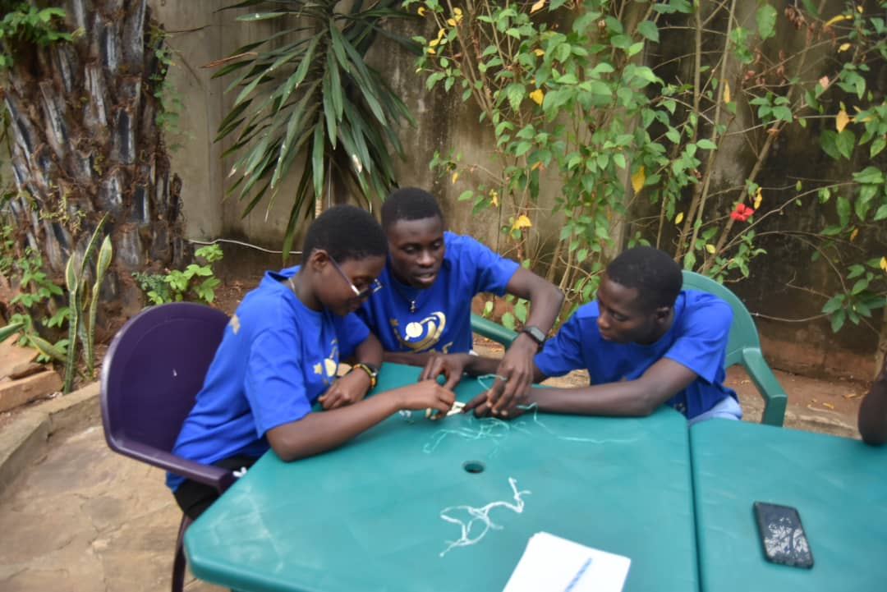

Entrepreneurship
We help youth understand business ideas, problem solving, creativity, and how to turn small opportunities into action.
We help youth understand business ideas, problem solving, creativity, and how to turn small opportunities into action.
We build confidence, responsibility, communication, and the courage to serve the community with purpose.
We create space for young people to practice English, express themselves, and connect with wider opportunities.
We use group exercises and shared projects to help youth learn collaboration, critical thinking, and trust.
Our Journey
Our Activities
Members of YEMC began attending leadership and entrepreneurship sessions with Francois Regis Iranzi, a YALI alumnus and founder of Rise and Shine for Change. He has trained more than 15 young people in our program over 3 months. After the sessions, members launched a start-up to produce palm oil and deliver it to rural areas that lack palm trees.
In collaboration with the Youth Emerging English Club in Mugara, YEMC began teaching 25 young people English during a two-month holiday, training them in reading, writing, speaking, and listening.
YEMC members joined the Youth Emerging English Club to visit sick community members in Mugara, showing love and kindness. 15 members later returned for an extended visit, continuing to demonstrate compassion and care.
Three Tujenge Scholars volunteered at YEMC to teach Leadership and Communication during a two-week holiday, sharing expertise from the intensive 18-month Tujenge Africa Foundation pre-university leadership curriculum.
YEMC trained members in digital tools including LinkedIn and the opportunity application process. As a result, Kelvin Ishemezwe applied and was admitted to the Tujenge Africa Foundation — a major achievement for the organization.
On December 22, 2025, YEMC in collaboration with Tujenge Scholars Cohort 9, through fundraising, provided reusable sanitary pads and food allowances to single mothers in Mugara, Rumonge. Joy, compassion, and love were shared during this Christmas season.
In April 2026, YEMC trained 50 young people in personal development sessions and design thinking. Youth presented ideas for improving the Mugara community and shared their perspectives on building the better Mugara they want.
Pictures


